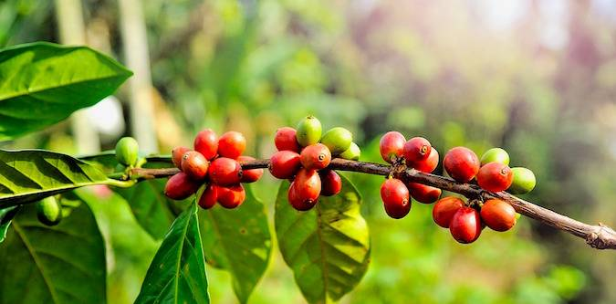

Not ”Just Coffee”….
Our coffees, which are hand-picked and hand-sorted bean by bean, are imported from the world’s highest quality Arabica plantations. We know almost every producer personally and we only buy green coffee of proven origin from a verified source. We strive to bring more and more organic coffees to our roastery to be used in our drinks. We have the best selections from the best coffee plantations.
Our Products
- Hot drinks
- Cold drinks
- Food
- Deserts